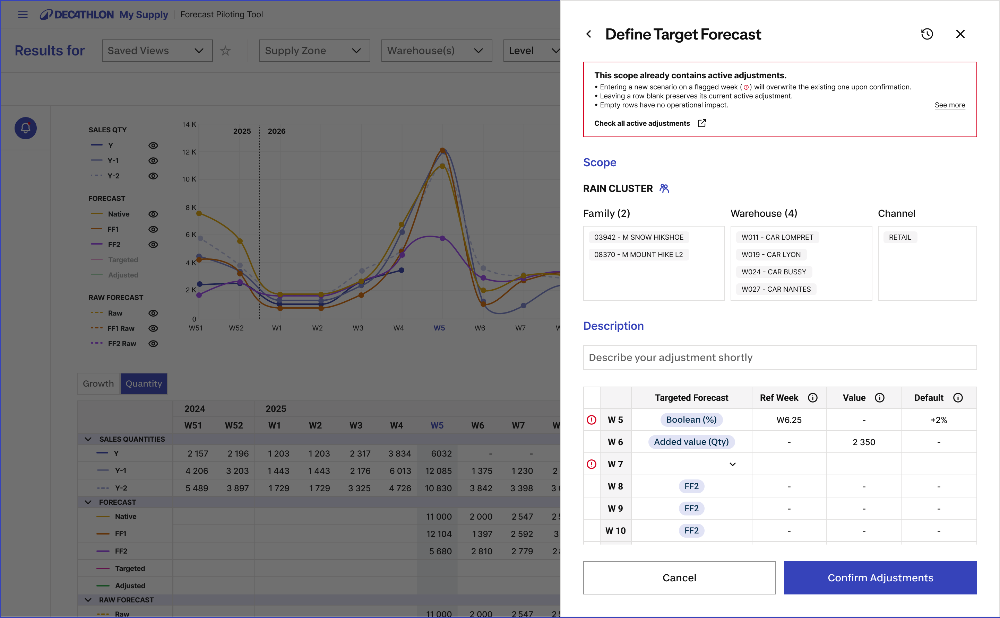

Annexe B · Modes d'accès
Forecast & Monitoring
Push or Pull. Same surface.
Always.
Whether a task begins from an automated system alert or an operator's own investigation, both paths converge into the exact same workspace.
Push Mode · System-Initiated
Anomaly alert detected
Categorized by business severity. Root cause pre-identified. A single click auto-fills the Scope Bar.
→
Both paths
converge
converge
←
Pull Mode · Operator-Initiated
Ad-hoc investigation
The planner selects filters directly in the Scope Bar. Explores freely. Identical surface, identical controls.
Shared Surface · Both Modes
Evidence Zone + Exception Tray
Real-time pre-flight impact previews. One-click bulk adjustments. Full audit trail.

